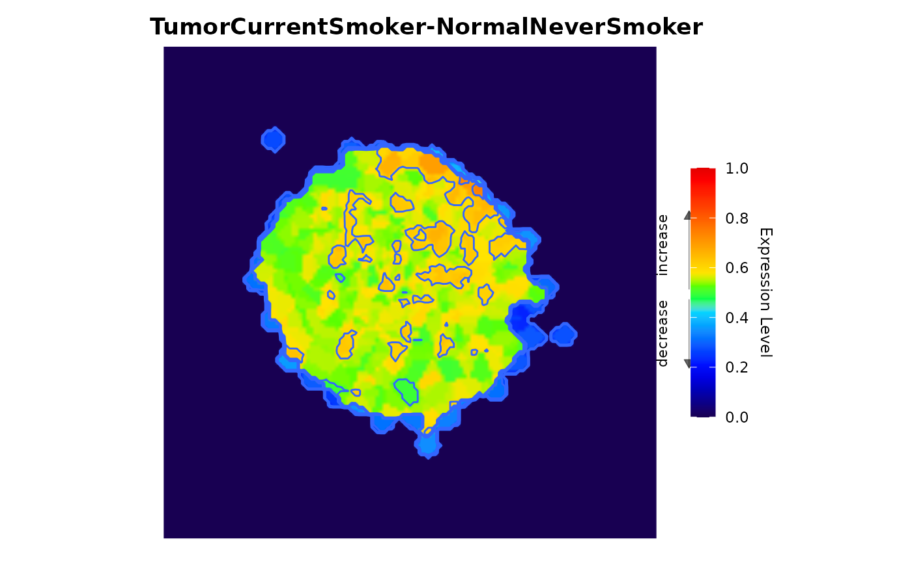
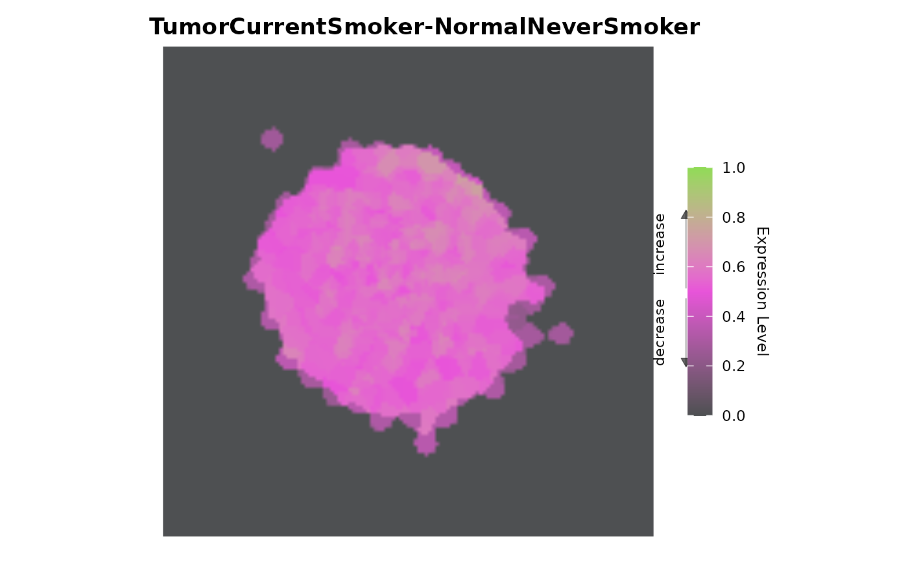

This is the Levi script mode. It allows you to create the integration of networks and gene expression levels as batch processing
levi(expressionInput, fileTypeInput, networkCoordinatesInput,
networkInteractionsInput, geneSymbolnput, readExpColumn,
contrastValueInput, zoomValueInput, resolutionValueInput,
smoothValueInput, expressionLog, contourLevi, setcolor)Filename of gene expression data, which is a numeric data.frame or matrix. The rows represent genes/proteins and the columns represent the experiment (RNA-seq, microarray, etc).
Filename of biological network. Levi can read files written in the following formats: Medusa (DAT), RedeR (DYN), Pajek (NET) and STRING/STITCH
It allows the user to load the coordinate of the nodes the network.
Parameter available only to STRING/STITCH data format. It allows the user to load the interaction data file of the network.
Column name from gene expression data containing the identifier (gene Symbol, Entrez ID, EMSEMBL, etc).
Variable from readExpColumn function containing the comparisons of the experiments
Numeric value for image contrast. The variable range is 0 to 100. The default value is 50
Numeric value for image zoom. The variable range is 0 to 100. The default value is 50.
Numeric value for image resolution. The variable range is 0 to 100. The default value is 50.
Numeric value for image smoothness. The variable range is 0 to 100. The default is 50.
Logical variable to indicate Log2 normalization in the expression levels. The default is FALSE
Logical variable to allow contour lines. The default is TRUE.
Select the color palette to build the heatmat. There is two options the **Multicolor** has 20 color levels combined. The **Two colors** has two types of color and the options available are: *purple_pink*, *green_blue*, *blue_yellow*, *pink_green*, *orange_purple*, *green_marine*.
Return a ggplot object and print a image (heatmat).
Integrates the biological network and gene expression levels (or other type of data)
template_network <- file.path(system.file(package="levi"),"extdata",
"medusa.dat", fsep = .Platform$file.sep)
template_expression <- file.path(system.file(package="levi"),
"extdata","expression.dat", fsep = .Platform$file.sep)
multicolor <- levi(networkCoordinatesInput = template_network,
expressionInput = template_expression, fileTypeInput = "dat",
geneSymbolnput = "ID",
readExpColumn=readExpColumn("TumorCurrentSmoker-NormalNeverSmoker"),
contrastValueInput = 50, resolutionValueInput = 50, zoomValueInput = 50,
smoothValueInput = 50, expressionLog = FALSE, contourLevi = TRUE)
#> Coordinate system already present. Adding new coordinate system, which will
#> replace the existing one.

twocolors <- levi(networkCoordinatesInput = template_network,
expressionInput = template_expression, fileTypeInput = "dat",
geneSymbolnput = "ID",
readExpColumn = readExpColumn("TumorCurrentSmoker-NormalNeverSmoker"),
setcolor = "pink_green", contourLevi = FALSE)
#> Coordinate system already present. Adding new coordinate system, which will
#> replace the existing one.
